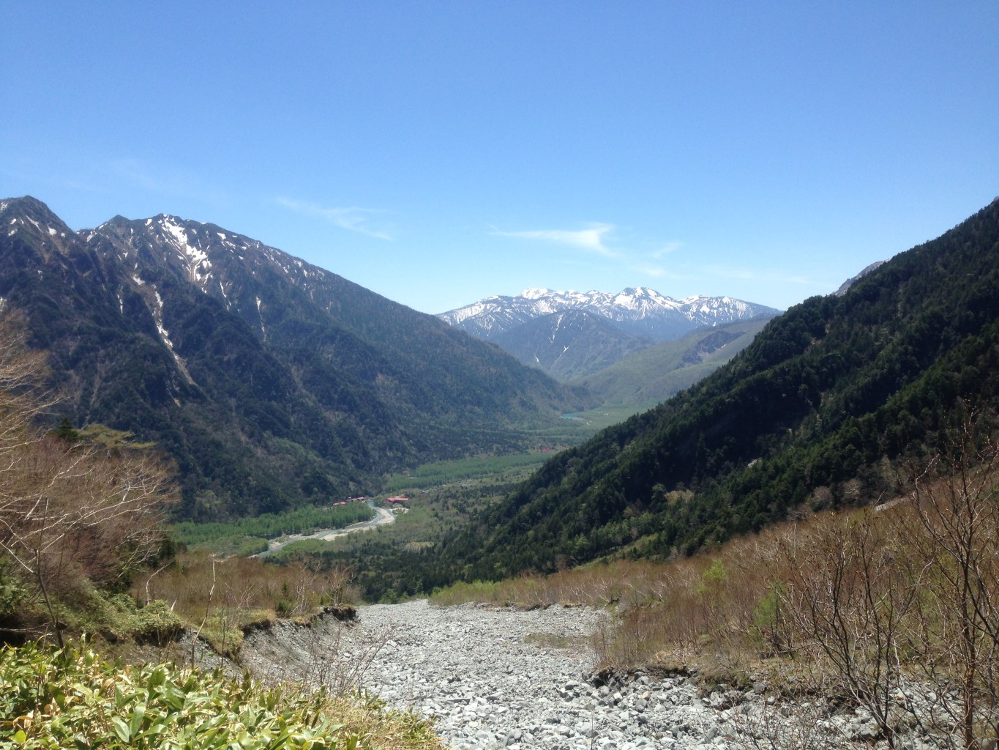
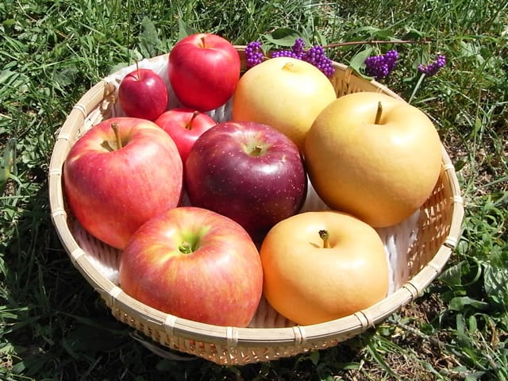

Nagano
 Nagano is a beautiful prefecture of Japan that is home to cherry blossoms, apples and the 1998 Winter Olympics. Nagano is located in the center of Japan and is the fourth largest prefecture at 13,561.56 km^2. The prefecture is abundant in mountains and nature so it is easy to enjoy nature and the rich landscape Nagano has to offer. The prefecture's three peak Japanese Alps are Hida, Kiso and Akaishi. Nagano is best known for its soba (buckwheat noodles), known as Shinano soba as well as its miso (fermented bean paste). Apples are one of Nagano's specialities as the prefecture as the ideal climate and high elevation.Nagano is the number two producer of apples in Japan, while also producing grapes, pears, peaches, prunes, apricots, plums , Ikeda persimmons, walnuts and blueberries. The best time to visit Nagano is May through September.